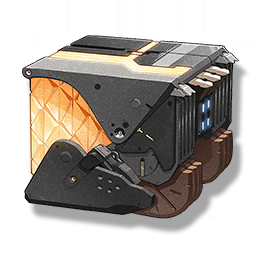

Resonators
Monsters
Weapons
Items
Primitive tide stone
Missions

Weapon energy of the Exile Leader.
Yellow ore obtained after removing the Tacetite shell, it looks like a tide stone, but it is actually Tacetite, usually used by the Exile Leader.